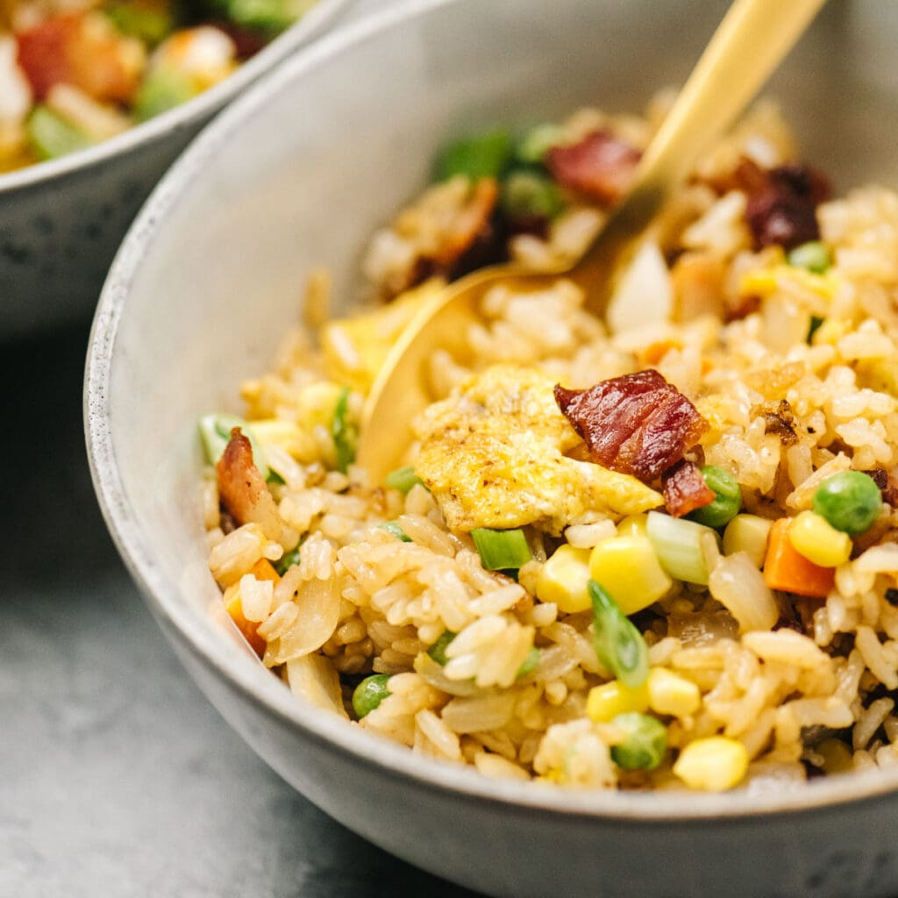

Breakfast Fried Rice

Description
This breakfast fried rice is a twist on bacon and eggs! My dad used to make this
for me on Saturday mornings when I was a kid; it's an easy and tasty brunch option.
You can substitute one bunch of broccoli for frozen peas if desired.
Ingredients
- 4 cups water
- 2 cups uncooked white rice
- 6 slice bacon
- 4 eggs, beaten
- 1 large yellow onion, chopped
- 1 cup frozen peas
- 4 green onions, chopped
- 1 1/2 tablespoons soy sauce, divided
Steps
- Bring water and rice to a boil in a saucepan. Reduce heat to medium-low, cover, and
simmer until rice is tender and liquid is absorbed, 20 to 25 minutes.
- Place bacon in a large skillet and cook over medium-high heat, occasionally turning,
until evenly browned, about 10 minutes. Transfer bacon slices to a paper towel-lined
plate to drain and crumble into bite-size pieces; reserve rendered bacon fat in the skillet.
- Cook and stir eggs in the same skillet over medium heat until slightly set, 1 to 3 minutes.
Stir yellow onion, peas, green onion, and 1 1/2 teaspoons soy sauce into eggs; cook and stir
until yellow onion is translucent, about 5 minutes more. Reduce heat to low; stir rice, crumbled
bacon, and remaining soy sauce into egg mixture until well-combined and heated through, 1 to 3 minutes.
Home